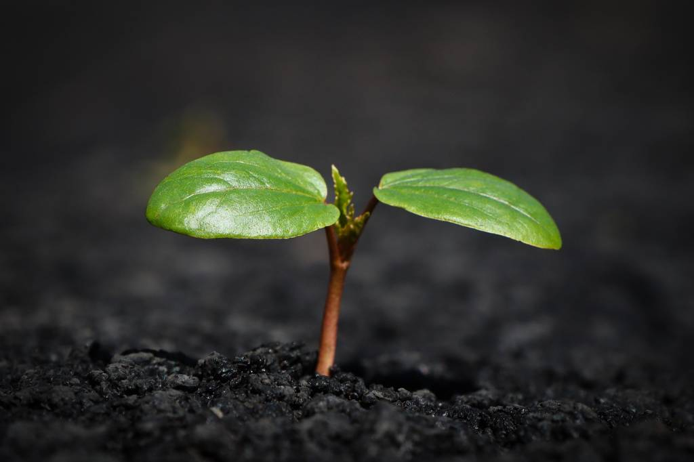

🍃 Raízes Sustentáveis
Ao longo deste site iremos explorar e conhecer um pouco mais sobre a consciência e sustentabilidade.
🍃 Conheça mais →🌱 TEMAS EM DESTAQUE
Conheça ações simples de reciclagem, consumo consciente, economia de água e preservação ambiental.
🌱 NOSSA MISSÃO
A sustentabilidade começa com atitudes simples. Nosso objetivo é compartilhar conhecimento e incentivar práticas que contribuam para um planeta mais saudável.
Saiba mais →
🌱 COMO PODEMOS AJUDAR?
Aprenda atitudes para preservar a natureza e os recursos naturais.
Saiba como separar e descartar corretamente diferentes tipos de resíduos.
Dicas para economizar água, energia e reduzir o desperdício no dia a dia.
🌱 O FUTURO COMEÇA COM NOSSAS ESCOLHAS